Monte Bar
Alta Capriasca, Luganese
- Altitudine
- 1602 m
- Posti letto
- 42
- Custodia
- tutto l’anno
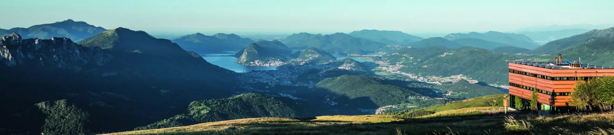
Importante
Sono iniziati i lavori di rifacimento del ponte sul fiume Bello. Di conseguenza la “Strada da Boris” (strada che dalla cantonale a Bidogno conduce al parcheggio Monte Bar, prima della sbarra) è chiusa all’accesso veicolare e non è possibile raggiungere il parcheggio Monte Bar. La Capanna Monte Bar è dunque raggiungibile esclusivamente da Corticiasca.
La capanna
Su un poggio di eccezionale bellezza, con una vista a 180 gradi dai Denti della Vecchia al Tamaro e, a ovest, sui 4000 vallesani dal Mischabel al Monte Rosa. Ricostruita nell’autunno 2016: camere da 2, 4 e 6 posti, servizi ai piani, refettorio per circa 80 persone, saletta riunioni per 20, ampia terrazza e un locale chiuso con caricatori per e-bike e piccola officina, secondo lo standard Bike Hotel.
La nuova capanna, di proprietà del CAS Ticino, è stata inaugurata nel 2016, esattamente 80 anni dopo il primo rifugio. Il progetto «Barlume» degli architetti Oliviero Piffaretti e Carlo Romano (Atelier PeR, Mendrisio), scelto tra trenta, è un volume semplice e cubico in legno di larice che ruota intorno al focolare: una lanterna nel paesaggio, in dialogo con le capanne sulle cime vicine.
Il refettorio, cuore della capanna, ha vetrate su tutti i lati e fino a 60 posti; la terrazza è accessibile dal refettorio e dalla cucina. Ai piani superiori camerette da 2, 4 e 6 posti con letti a castello e servizi al piano; c’è una sala workshop per riunioni, corsi e scuole. Al piano inferiore i servizi, il locale aperto agli escursionisti quando la capanna è chiusa e il deposito biciclette, con ricarica delle batterie e piccola officina secondo gli standard Bike Hotel.
Facile da raggiungere su una ricca rete di sentieri e di percorsi in mountain bike, con aspetti naturalistici, storici e paesaggistici sorprendenti, è la meta ideale per famiglie e scuole, o per una notte in rifugio dopo una cena in compagnia.
Soggiorno
- Apertura
- Tutto l’anno; apre anche per eventi, cene e pranzi su richiesta
- Custodia
- Da maggio a inizio novembre tutti i giorni; d’inverno dal venerdì a pranzo alla domenica a pranzo, nei festivi e nelle vacanze scolastiche
- Posti letto
- 42, in camere da 2-4-6
- Pasti
- Cucina tipica con prodotti del territorio; menu speciali su riservazione
- In assenza dei custodi
- La capanna è chiusa; resta accessibile solo un piccolo atrio per le emergenze
Arrivare
- Cartina
- CNS 1333 Tesserete, coordinate 721.800 / 106.610
La cucina
Cuciniamo con passione i prodotti del territorio, freschi e di stagione, con la cultura gastronomica ticinese come riferimento. Il pranzo è servito dalle 11.30 alle 15.00; nel pomeriggio ci sono sempre una zuppa, piatti freddi e torte. La cena è alle 19.00: la sera è gradita la riservazione. Su richiesta prepariamo anche menu per occasioni speciali.
- Torte fatte in capanna, minestrone di verdure e legumi, polenta ticinese.
- Formaggi degli alpeggi vicini e salumi ticinesi.
- Griglia in terrazza d’estate, selvaggina in autunno, fondue al formaggio d’inverno.
Colazione dalle 7.45 (d’inverno dalle 8.00). I cani non sono ammessi in capanna; i minorenni sono benvenuti se accompagnati da un adulto. Dopo le 22.00 rispettate chi dorme.
I gestori
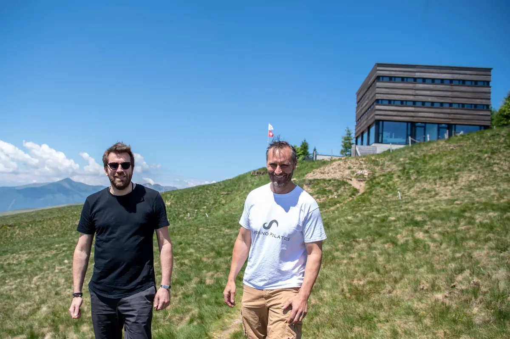
Dal 2020 la capanna è gestita da James Mauri e Serge «Seo» Santese, con esperienze in ottime cucine del cantone e non solo. Siamo felici di fare quello che facciamo: vivere qui è una scelta, e soprattutto una bella scuola di vita.
James e Seo
Tariffe e prenotazioni
PrenotaSoci CAS/FAT e club con diritto di reciprocità
Pernottamento con mezza pensione
- Bambini fino a 7 anni
- Fr. 30.–
- Ragazzi da 8 a 14 anni
- Fr. 40.–
- Giovani da 15 a 21 anni
- Fr. 60.–
- Adulti dai 22 anni
- Fr. 80.–
Non soci
Pernottamento con mezza pensione
- Bambini fino a 7 anni
- Fr. 30.–
- Ragazzi da 8 a 14 anni
- Fr. 45.–
- Giovani da 15 a 21 anni
- Fr. 65.–
- Adulti dai 22 anni
- Fr. 95.–
Camera doppia
Con letto matrimoniale e biancheria fresca
- Per persona
- Fr. 120.–
- Uso singolo
- Fr. 150.–
Famiglie e gruppi
Famiglie con 2 adulti e almeno 2 giovani fino a 15 anni; gruppi di giovani (scuole, scout, G+S) da lunedì a giovedì
- Famiglie, venerdì-sabato: riduzione a persona
- Fr. 5.–
- Famiglie, domenica-giovedì: riduzione a persona
- Fr. 10.–
- Gruppi: bambini fino a 15 anni
- Fr. 35.–
- Gruppi: giovani da 15 a 18 anni
- Fr. 45.–
Extra
Menu particolari per eventi da concordare con i gestori; sacco lenzuolo obbligatorio
- Lunch da asporto
- Fr. 12.–
- Tè di giornata (1 l)
- Fr. 3.–
- Doccia (a persona)
- Fr. 5.–
- Sacco lenzuolo
- Fr. 7.–
Sala workshop
Con proiettore e tavoli per circa 15 persone
- Al giorno, senza pasti
- Fr. 200.–
- Con pranzo o cena
- Fr. 100.–
- Con mezza pensione
- gratis
- Estate (dal 1° maggio all’8 novembre 2026): aperto tutti i giorni.
- Inverno (dal 9 novembre 2026 al 30 aprile 2027): dal venerdì a pranzo alla domenica a pranzo, sempre aperto nei festivi e nelle vacanze scolastiche; negli altri giorni su richiesta. Quando la capanna è chiusa resta accessibile solo l’entrata con i servizi e le bibite: non si può pernottare.
- Riservazione online con il pulsante «Prenota». Annullamenti e modifiche senza penale entro le 18.00 di 2 giorni prima dell’arrivo fino a 9 persone, di 4 giorni prima da 10 persone; poi Fr. 50.– per persona e notte.
- Check-in dalle 16.30 alle 18.00, check-out alle 9.00. Chi pernotta si annuncia all’arrivo e firma il libro degli ospiti.
- Pagamento in contanti, EC, Visa o Twint.
Come arrivare
A piedi o in mountain bike la capanna si raggiunge senza grosse difficoltà, per lo più su itinerari adatti alle famiglie. Anche d’inverno si arriva con gli sci o le racchette, ricordando che in montagna le condizioni possono essere diverse dal fondovalle. I posteggi in valle sono pochi: meglio i mezzi pubblici.
- Da Corticiasca: 1 h 30.
- Da Bidogno: 2 h.
- Da Isone per la Val Serdena e Piandanazzo: 3 h.
- Da Gola di Lago: 2 h 30.
- Da Scareglia o Signôra: 3 h 30.
Percorsi su SvizzeraMobile. Cartina: CNS 1:25’000 foglio 1333 Tesserete.
Sicurezza: d’inverno ghiaccio e neve rendono insidiosi anche passaggi banali, e sui pendii ripidi e nei canaloni c’è pericolo di valanghe. D’estate pascolano vacche nutrici con i vitelli: non avvicinatevi e tenete i cani al guinzaglio. Chi va in bicicletta rispetti gli escursionisti. Non abbandonate rifiuti e non accendete fuochi all’aperto: in passato il Monte Bar è stato colpito da incendi catastrofici.
Attività
La zona offre innumerevoli possibilità per la mountain bike, tra asfalto, sterrati e single trail, con giri ad anello panoramici per buona parte dell’anno: i percorsi nazionali 66, 358 e 359 sono descritti da Lugano Region. Dalla capanna si arriva anche in Valle Cavargna per il Passo San Lucio, o a nord verso la Val Serdena e Rivera.
La catena che da Gola di Lago culmina nei 2115 m del Gazzirola è solcata da sentieri facili. La capanna è meta e tappa del Lugano Trekking e del sentiero nazionale 52; da qui si raggiunge il Camoghè e la Valle Morobbia. Autunno e primavera sono le stagioni ideali.
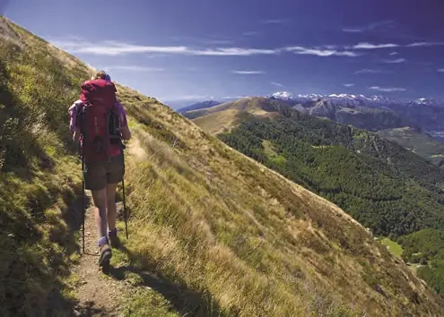
Escursioni tematiche
Sette sentieri facili tra storia, natura e paesaggio: dalle portatrici di sci alla selvaggina.
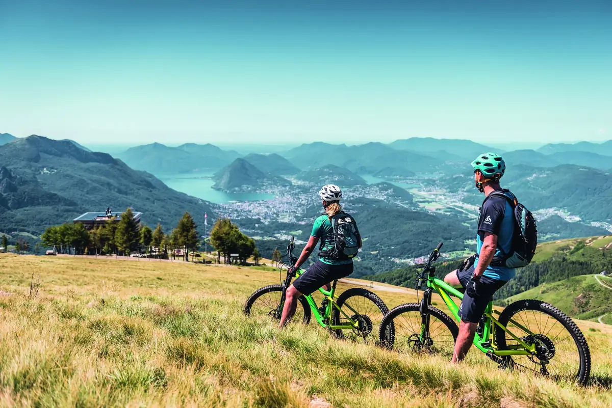
Mountain bike
Giri ad anello panoramici tra asfalto, sterrati e single trail, con deposito e ricarica in capanna.
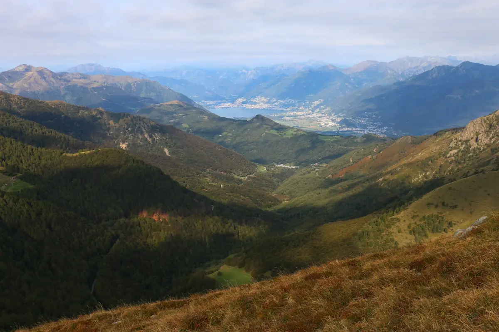
Curiosità
L’origine del nome, i boschi perduti, le donne «sherpa» e i massi coppellari del Monte Bar.
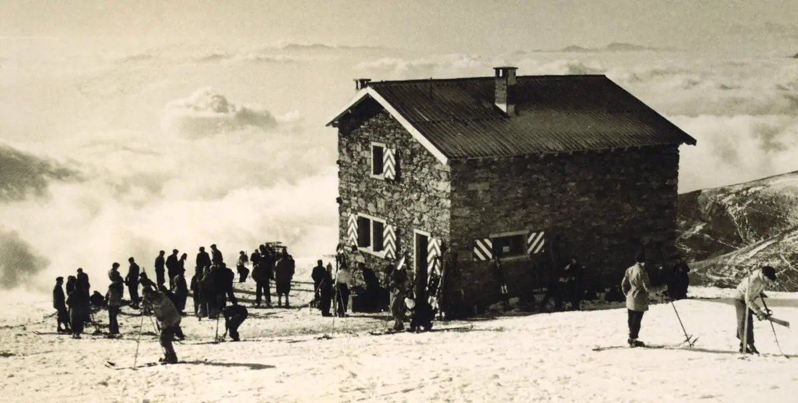
Storia
Dalla prima scuola di sci del Ticino nel 1935 al rifugio del 1936, fino alla nuova capanna «Barlume» del 2016.
La storia della capannaDalla capanna
Le ultime notizie della capanna, pubblicate dai guardiani su Facebook.
Apri la pagina FacebookI post vengono caricati da Facebook solo dopo il clic: da quel momento Facebook riceve dati sulla tua visita.
Senti il guardiano prima di partire
Verifica sempre la presenza del guardiano e le condizioni della montagna.
- Guardiani
- James Mauri e Serge Santese
- Telefono
- +41 91 966 33 22
- montebar@casticino.ch
Sostieni la capanna
Manutenzione, rinnovi e lavori costano: le capanne vivono anche grazie ai soci e agli amici della montagna. Puoi sostenerle con una donazione sul conto della sezione, indicando il nome della capanna.
- Conto
- Banca Stato, Lugano
IBAN CH09 0076 4128 9526 1200 6 - Causale
- Capanna Monte Bar
Sostenitori
La nuova capanna è nata grazie a questi sostenitori e agli oltre 300 amici, pubblici e privati, che hanno contribuito alla sua realizzazione. Grazie!
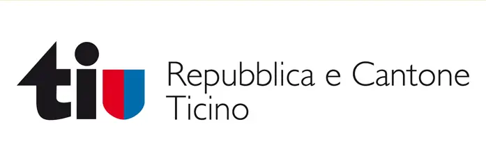
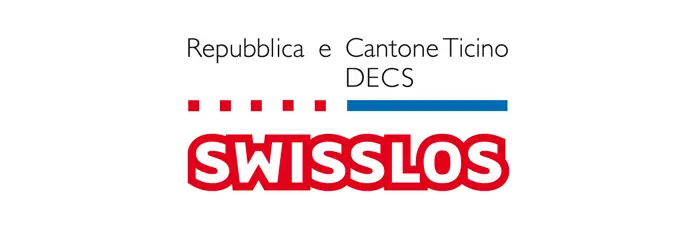
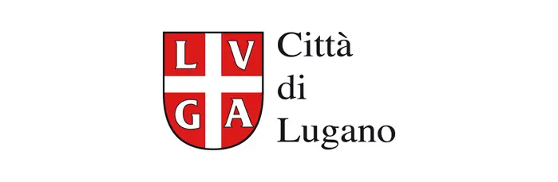
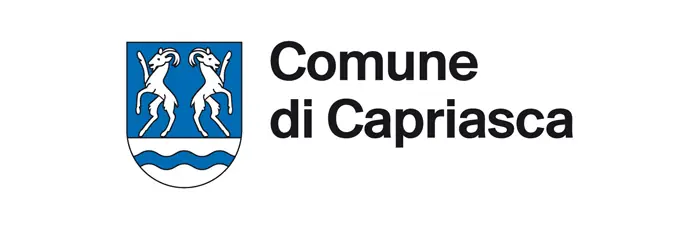
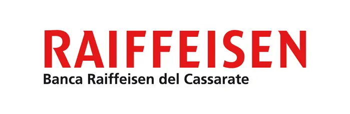
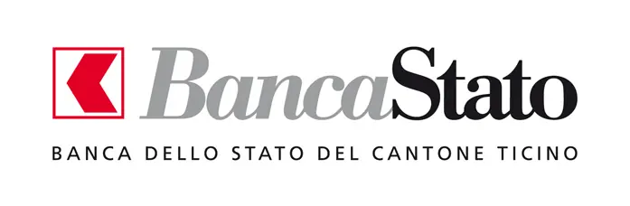
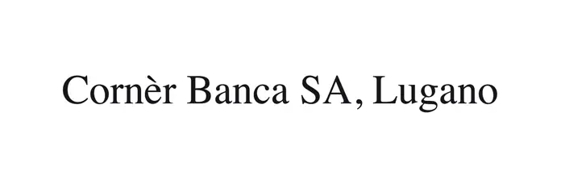
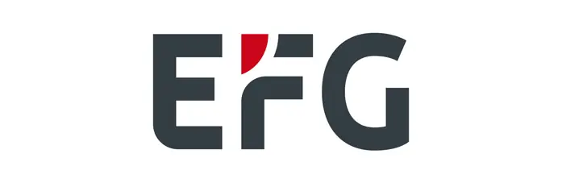
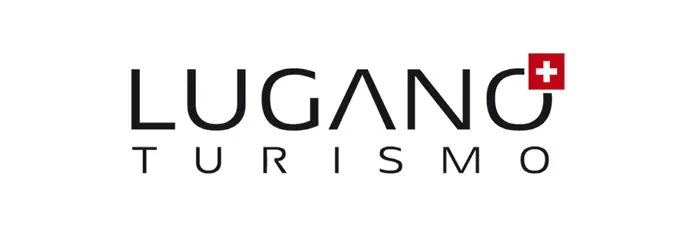
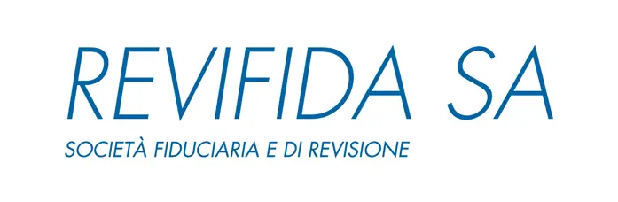
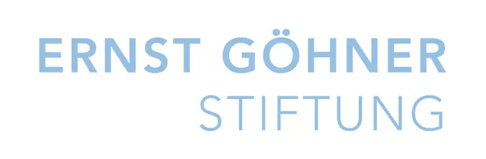
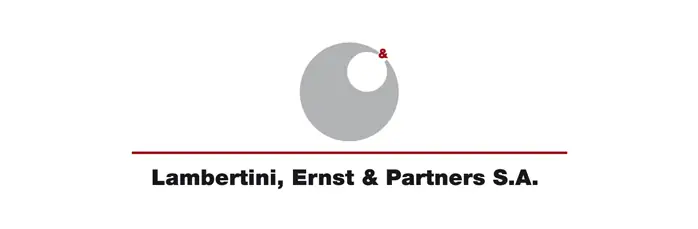
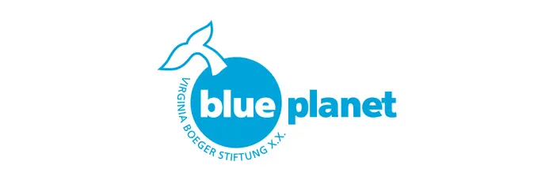
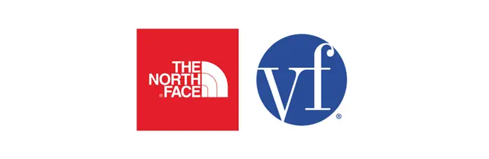
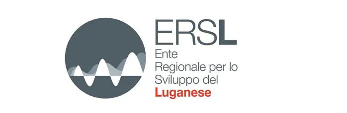